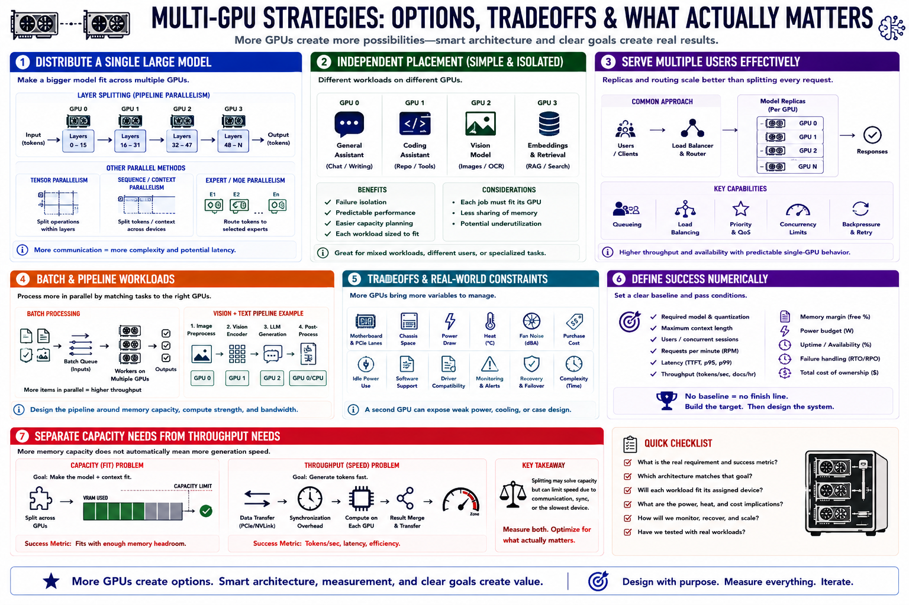

Why Use Multiple GPUs?
Connecting to LMS... Progress: in progress

Narration
Model splitting can distribute weights across devices so a larger model fits. Layer splitting assigns groups of layers to different GPUs. Other parallel methods divide operations more tightly and may require frequent communication.
Independent placement can be simpler: one GPU serves a general model while another serves code, vision, embeddings, or a second user queue. Failure and performance remain more isolated, but each workload must fit its assigned device.
Serving multiple users often benefits from replicas or request routing rather than splitting every request. This can increase throughput and availability while preserving predictable single-GPU behavior. It also requires queueing, load balancing, and capacity controls.
Batch workloads can process several documents, images, or prompts in parallel. Vision-and-text pipelines may assign image processing, language generation, and post-processing according to device capability and memory.
Tradeoffs include motherboard and chassis constraints, power, heat, fan noise, purchase cost, idle consumption, software support, driver compatibility, monitoring, and recovery. Adding a second GPU can expose a weak power supply or airflow design.
Define success numerically: required model and context, users, requests per minute, latency, throughput, memory margin, power budget, uptime, and cost. Without that baseline, multi-GPU becomes an expensive experiment with no clear pass condition.
Separate memory-capacity need from compute-throughput need. Adding VRAM through splitting may allow a model to run while leaving generation limited by transfers, synchronization, or the least capable participating device.